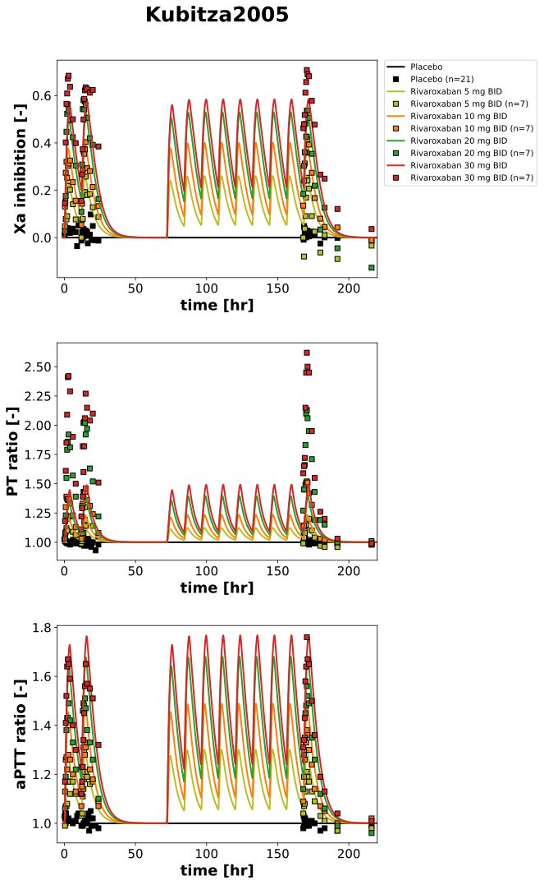
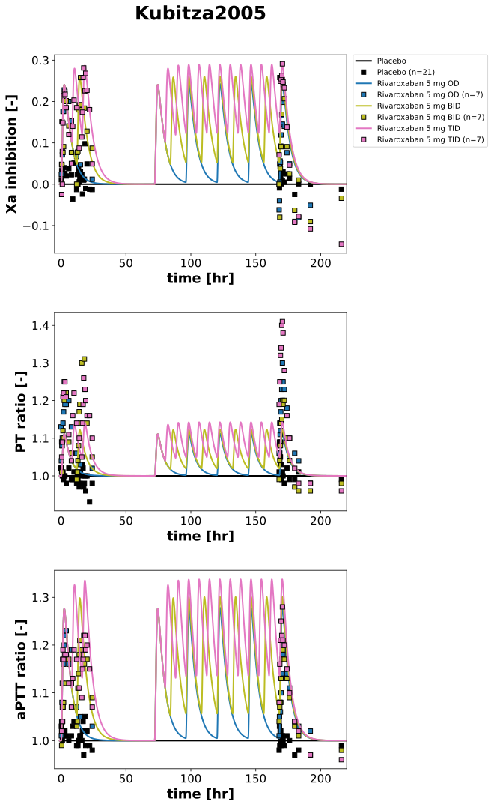
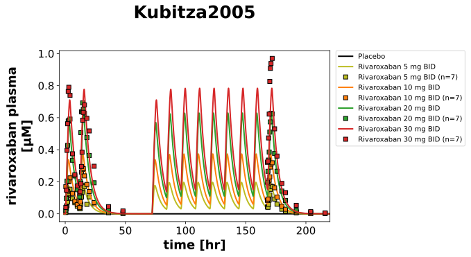

Overview
Models
| model | source |
|---|---|
| model | rivaroxaban_body_flat.xml |
Datasets
Figures (3)






Code
"""Simulation experiment of the study Kubitza2005."""
from typing import ClassVar, override
from pkpdsim.metadata import (
ApplicationForm,
Dosing,
Fasting,
Health,
PKPDMappingMetaData,
Route,
Tissue,
)
from sbmlsim import Q
from sbmlsim.data import DataSet
from sbmlsim.fit import FitData, FitMapping
from sbmlsim.plot import Axis, Figure
from sbmlsim.simulation import Change, Simulation
from pkdb_models.models.rivaroxaban import MODEL
from pkdb_models.models.rivaroxaban.experiments.base_experiment import (
RivaroxabanSimulationExperiment,
)
class Kubitza2005(RivaroxabanSimulationExperiment):
"""Simulation experiment of Kubitza2005.
Multiple doses in healthy men, tablets within 5 min after a standard meal
(fed): 5 mg once (OD), twice (BID) or three times daily (TID) and 10, 20,
30 mg BID on day 0 and days 3 to 7, day 7 only the morning dose. Factor Xa
inhibition, prothrombin time and aPTT relative to the baseline as medians
(Fig1 BID doses, Fig2 5 mg OD and TID), plasma of the BID doses as
geometric means (Fig3), time in days.
"""
formulations: ClassVar[list[str]] = ["P", "BID5", "BID10", "BID20", "BID30"]
formulations_5: ClassVar[list[str]] = ["P", "OD5", "BID5", "TID5"]
all_formulations: ClassVar[list[str]] = list(
dict.fromkeys(formulations + formulations_5)
)
colors: ClassVar[dict[str, str]] = {
"P": "black",
"BID5": "tab:olive",
"BID10": "tab:orange",
"BID20": "tab:green",
"BID30": "tab:red",
"OD5": "tab:blue",
"TID5": "tab:pink",
}
formulation_labels: ClassVar[dict[str, str]] = {
"P": "Placebo",
"OD5": "Rivaroxaban 5 mg OD",
"BID5": "Rivaroxaban 5 mg BID",
"TID5": "Rivaroxaban 5 mg TID",
"BID10": "Rivaroxaban 10 mg BID",
"BID20": "Rivaroxaban 20 mg BID",
"BID30": "Rivaroxaban 30 mg BID",
}
doses: ClassVar[dict[str, float]] = {
"P": 0,
"OD5": 5,
"BID5": 5,
"TID5": 5,
"BID10": 10,
"BID20": 20,
"BID30": 30,
}
bodyweight = 81.6
#: observable: (figure, label of the data, column of the central value);
#: the plasma concentrations are geometric means
info_pk: ClassVar[dict[str, tuple[str, str, str]]] = {
"[Cve_riv]": ("Fig3", "rivaroxaban", "mean"),
}
#: observable: (panel, label of the data, column of the central value);
#: the pharmacodynamics are medians, of the BID doses and placebo in Fig1,
#: of 5 mg OD and TID in Fig2
info_pd: ClassVar[dict[str, tuple[str, str, str]]] = {
"Xa_inhibition": ("A", "factor Xa inhibition", "median"),
"PT_ratio": ("B", "prothrombin time (change relative)", "median"),
"aPTT_ratio": ("C", "aPTT (change relative)", "median"),
}
@staticmethod
def pd_figure(formulation: str) -> str:
"""Figure of the pharmacodynamics of a group."""
return "Fig2" if formulation in {"OD5", "TID5"} else "Fig1"
@override
def datasets(self) -> dict[str, DataSet]:
dsets = {}
fig_ids = ["Fig3", "Fig1A", "Fig1B", "Fig1C", "Fig2A", "Fig2B", "Fig2C"]
for fig_id in fig_ids:
df = self.load_dataframe(fig_id)
for label, df_label in df.groupby("label"):
dset = DataSet.from_df(df_label, self.ureg)
if df_label["measurement_type"].iloc[0] == "concentration":
dset.unit_conversion("mean", 1 / self.Mr.riv)
dsets[self.to_sid(f"{fig_id}_{label}")] = dset
return dsets
@override
def simulations(self) -> dict[str, Simulation]:
tcsims = {}
# dosing timepoints
timepoints_od = [72, 96, 120, 144, 168, 328]
timepoints_bid = [12, 72, 84, 96, 108, 120, 132, 144, 156, 168, 328]
timepoints_tid = [
8,
16,
72,
80,
88,
96,
104,
112,
120,
128,
136,
144,
152,
160,
168,
328,
]
for formulation in self.all_formulations:
dose = self.doses[formulation]
if formulation == "P" or formulation.startswith("OD"):
timepoints = timepoints_od
elif formulation.startswith("BID"):
timepoints = timepoints_bid
elif formulation.startswith("TID"):
timepoints = timepoints_tid
else:
raise ValueError(f"Unknown dosing regimen: '{formulation}'")
# a dose at 0 hr and at the timepoints, the simulation ends at the
# last timepoint; a dose adds to what is left of the earlier ones; it starts 1 hr before the first dose, the
# baseline of the pharmacodynamics is digitized at slightly
# negative times
tstart = -1 # [hr]
tend = timepoints[-1] # [hr], day 13 (the data end on day 9)
tcsims[self.to_sid(formulation)] = Simulation(
time_unit="hr",
start=tstart,
end=tend,
preinit_changes={
**self.default_changes(),
"BW": Q(self.bodyweight, "kg"),
"GU__fed": Q(self.fasting_map["fed"], "dimensionless"),
},
changes=[
Change([0], {"PODOSE_riv": Q(dose, "mg")}),
self.add_doses(timepoints[:-1], {"PODOSE_riv": Q(dose, "mg")}),
],
)
return tcsims
def _references(self) -> list[tuple[str, str, str, str]]:
"""References of the groups: (formulation, observable, dataset, column)."""
references = []
for formulation in self.all_formulations:
for sid, (panel, name, central) in self.info_pd.items():
fig_id = f"{self.pd_figure(formulation)}{panel}"
references.append(
(formulation, sid, f"{fig_id}_{name}_{formulation}", central)
)
if formulation.startswith("BID"):
for sid, (fig_id, name, central) in self.info_pk.items():
references.append(
(formulation, sid, f"{fig_id}_{name}_{formulation}", central)
)
return references
@override
def fit_mappings(self) -> dict[str, FitMapping]:
mappings = {}
for formulation, sid, dataset, central in self._references():
mappings[self.to_sid(f"fm_{dataset}")] = FitMapping(
self,
reference=FitData(
self,
dataset=self.to_sid(dataset),
xid="time",
yid=central,
yid_sd=None,
count="count",
),
observable=FitData(
self,
task=self.to_sid(f"task_{formulation}"),
xid="time",
yid=sid,
),
metadata=PKPDMappingMetaData(
tissue=Tissue.PLASMA,
route=Route.PO,
application_form=ApplicationForm.TABLET,
dosing=Dosing.MULTIPLE,
health=Health.HEALTHY,
fasting=Fasting.FED,
),
)
return mappings
@override
def figures(self) -> dict[str, Figure]:
references = self._references()
figures = []
for sid, observables, formulations in [
("Fig1", list(self.info_pd), self.formulations),
("Fig2", list(self.info_pd), self.formulations_5),
("Fig3", list(self.info_pk), self.formulations),
]:
fig = Figure(
experiment=self,
sid=sid,
num_rows=len(observables),
name=self.__class__.__name__,
settings={"legend_position": "outside"},
)
# day 0 and day 7 to day 9, the data are not measured in between
plots = fig.create_plots(
xaxis=Axis(self.label_time, unit=self.unit_time, min=-5, max=220),
legend=False,
)
plots[0].legend = True
for k, observable in enumerate(observables):
plots[k].set_yaxis(
self.labels[observable].replace("\n", " "),
unit=self.units[observable],
)
for formulation in formulations:
plots[k].add_data(
task=self.to_sid(f"task_{formulation}"),
xid="time",
yid=observable,
label=self.formulation_labels[formulation],
color=self.colors[formulation],
)
for f, o, dataset, central in references:
if f == formulation and o == observable:
plots[k].add_data(
dataset=self.to_sid(dataset),
xid="time",
yid=central,
count="count",
label=self.formulation_labels[formulation],
color=self.colors[formulation],
linestyle="",
)
figures.append(fig)
return self.figures_by_sid(*figures)
if __name__ == "__main__":
MODEL.run_experiments(Kubitza2005, output_dir=Kubitza2005.__name__)